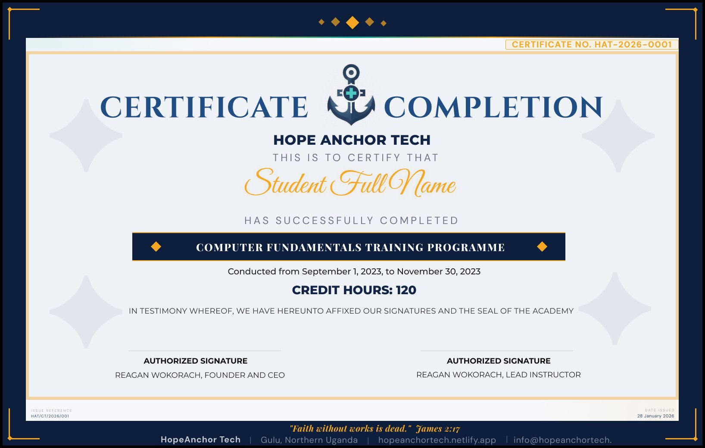

Real answers to the questions people actually ask us before they sign up. If your question is not here, just send us a message.
We accept: MTN Mobile Money, Airtel Money, PayPal, and Bank Transfer. Contact us on WhatsApp (+256 776 815217) for current account details and payment instructions.
Ask on WhatsAppYes. We offer flexible instalment arrangements for students who need them, contact us and we will work something out together. Nobody should miss out because of money.
Yes! Computer Fundamentals and Cybersecurity Awareness are completely free with no hidden fees. They are funded by revenue from our paid services, true to our mission.
Not at all. Our Computer Fundamentals course starts from absolute zero. We assume you have never used a computer before. All you need is the desire to learn.
No age limit. We welcome students aged 13 or older. Technology is for everyone, at any stage of life.
We run rolling cohorts throughout the year. Once you contact us and confirm enrolment, we will place you in the next available intake, usually within one to two weeks. Contact us to confirm the next start date →
Absolutely. We offer group training for schools, NGOs, businesses, and government departments, in-person or online. Contact us for a tailored quote.
In-person (Gulu): No, we provide computers at our training facility.
Online students: You need a smartphone, tablet, or computer with a reliable internet connection to attend video sessions and complete practical exercises.
Yes. All courses are available fully online via Zoom or Google Meet. We have students joining from Kenya, Tanzania, South Africa, the UK, Canada, and beyond. Your location is no barrier.
Yes. Every student who completes all sessions and passes the final assessment receives an official Hope Anchor Tech Certificate of Completion — with your name, course title, completion date and our seal.

Our certificate is issued by Hope Anchor Tech as an organisational credential, similar to certificates from other training providers. It is well-suited for your CV, LinkedIn profile, and job applications, particularly for IT and office roles in Uganda and the region.
Just send us a message. We read every one personally and usually reply the same day.